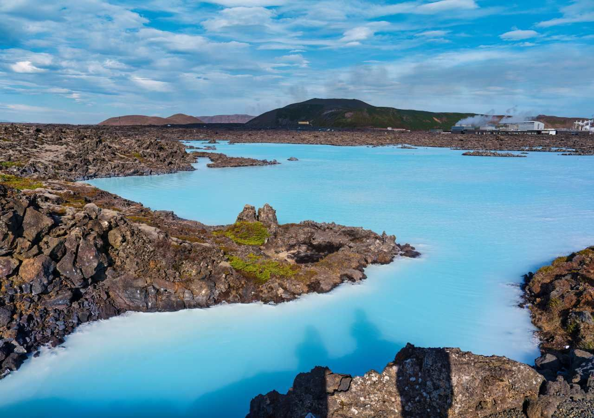
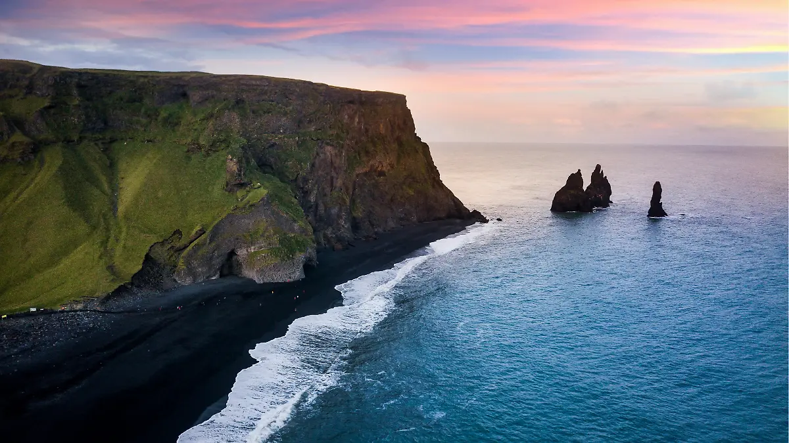
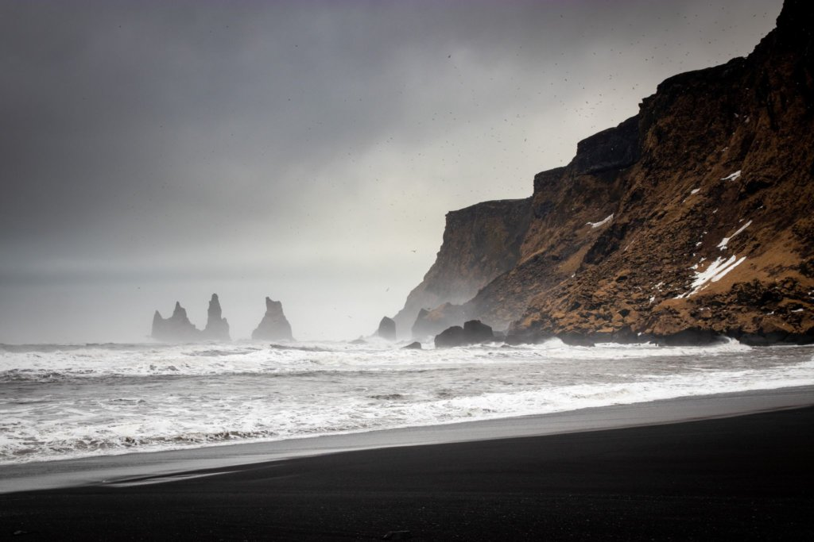

⇩
Quiero ir a Islandia porque es un lugar mágico, con paisajes impresionantes. Aunque tal vez en algún futuro no pueda ir, con solo verlo en imágenes me hace sentir una felicidad inmensa, ya que sus paisajes y su clima me parecen muy bonitos. Por ejemplo, me gustaría conocer la playa de arena negra, que en realidad está formada por arena volcánica proveniente de lava, y me parece muy bonita. También me gustaría ir a ver las auroras boreales, ya que son un fenómeno natural muy bonito y único. Obviamente, no solo en Islandia se pueden ver, pero yo quiero vivir esa experiencia allí. También me gustaría ir porque, al ser un país frío y tener muchos volcanes, existen muchas aguas termales. Quiero tener la experiencia de sentir lo que es bañarse al aire libre, con un frío extremo, y aun así sentirse cálido gracias al agua termal.

